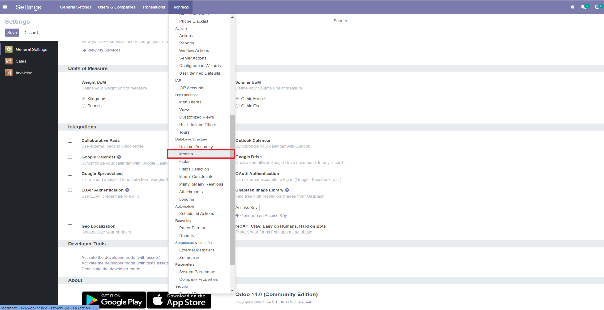
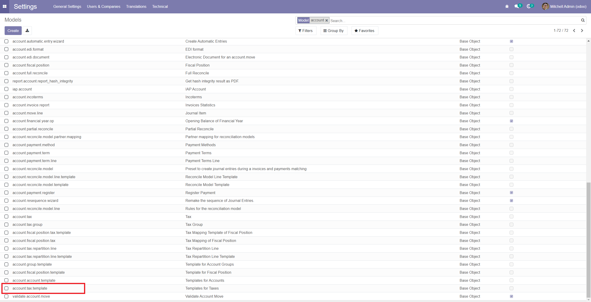
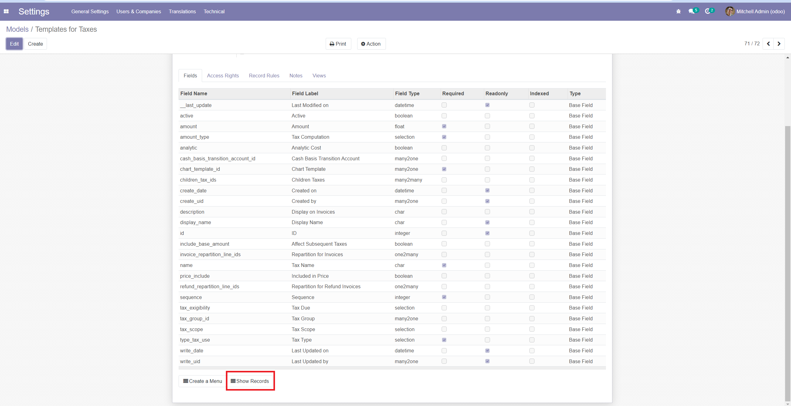
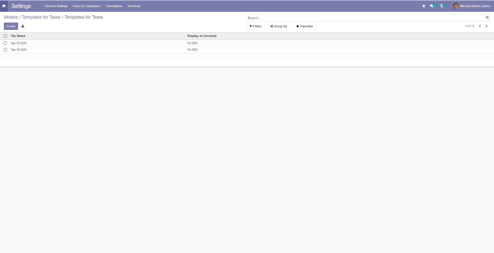

<div class="container" style="font-weight: 400 !important; font-size: 1rem !important;">
    <div class="col-sm-12">
        
        <h2 class="oe_slogan" style="color:#875A7B;">Show Records</h2>
        <p>With this module developer can open list of all records from a model view.</p>
        <p>This module is installed automatically. Go to Settings -> Technical -> Models -> (Open any model) -> At the bottom you can see "Show Records" button. It will display all records from the model. It is usefull when you want to see records from model without menu.</p>
        <br/>
        <a href="https://www.youtube.com/channel/UCf5TCwpMFTfA7g76Pk7SxwA">Check out my youtube channel to learn more!</a>
        <br/>
        <br/>
        <p>In case of any questions don't hesitate to email me: <b>tadeusz.karpinski@gmail.com</b></p>
        <h2 class="oe_slogan" style="color:#875A7B;">Screenshots</h2>
        <p>Screenshot 1</p>
        
        <p>Screenshot 2</p>
        
        <p>Screenshot 3</p>
        
        <p>Screenshot 4</p>
        
    </div>
</div>